<meta charset="utf-8">
<meta name="viewport" content="width=device-width, initial-scale=1, viewport-fit=cover">
<title>Performans Sanatları Fizyoterapisi</title>
<link rel="preconnect" href="https://fonts.googleapis.com">
<link rel="preconnect" href="https://fonts.gstatic.com" crossorigin>
<link rel="stylesheet" href="https://fonts.googleapis.com/css2?family=Bodoni+Moda:ital,opsz,wght@0,6..96,400..700;1,6..96,400..700&family=DM+Mono:wght@400;500&family=Hanken+Grotesk:wght@400;500;600&display=swap">
<style>
:root{
  --ground:#F1EFF4;
  --surface:#FAF9FC;
  --ink:#1E1826;
  --muted:#5F576B;
  --line:#D8D3DF;
  --accent:#D6334F;
  --accent-ink:#B0223D;
  --satin:#F1D9D6;
  --satin-ink:#5A2432;
  --ok:#2C8157;
  --warn:#A86B12;
  --figure:#1E1826;
  --figure-far:rgba(30,24,38,.32);

  --display:"Bodoni Moda", "Didot", "Bodoni 72", Georgia, serif;
  --body:"Hanken Grotesk", "Helvetica Neue", Arial, system-ui, sans-serif;
  --mono:"DM Mono", ui-monospace, "SF Mono", Menlo, monospace;

  --gutter:clamp(16px, 4vw, 48px);
  --maxw:1180px;
}
@media (prefers-color-scheme: dark){
  :root:not([data-theme="light"]){
    color-scheme:dark;
    --ground:#141019;
    --surface:#1C1723;
    --ink:#EDE9F2;
    --muted:#A79FB3;
    --line:#342D3E;
    --accent:#FF5C77;
    --accent-ink:#FF7C92;
    --satin:#33202B;
    --satin-ink:#F6D3D6;
    --ok:#5CC98F;
    --warn:#E6AC4E;
    --figure:#EDE9F2;
    --figure-far:rgba(237,233,242,.30);
  }
}
:root[data-theme="dark"]{
  color-scheme:dark;
  --ground:#141019;
  --surface:#1C1723;
  --ink:#EDE9F2;
  --muted:#A79FB3;
  --line:#342D3E;
  --accent:#FF5C77;
  --accent-ink:#FF7C92;
  --satin:#33202B;
  --satin-ink:#F6D3D6;
  --ok:#5CC98F;
  --warn:#E6AC4E;
  --figure:#EDE9F2;
  --figure-far:rgba(237,233,242,.30);
}

*{box-sizing:border-box}
html{scroll-behavior:smooth;scroll-padding-top:84px}
@media (prefers-reduced-motion: reduce){html{scroll-behavior:auto}}
body{
  background:var(--ground);
  color:var(--ink);
  font-family:var(--body);
  font-size:17px;
  line-height:1.6;
  -webkit-font-smoothing:antialiased;
}
a{color:inherit}
:focus-visible{outline:2px solid var(--accent);outline-offset:3px;border-radius:2px}
.wrap{max-width:var(--maxw);margin-inline:auto;padding-inline:var(--gutter)}

.label{
  font-family:var(--mono);
  font-size:12.5px;
  letter-spacing:.08em;
  text-transform:uppercase;
  color:var(--muted);
  font-weight:400;
}

/* Header */
.top{
  position:sticky;top:env(safe-area-inset-top,0px);z-index:10;
  background:color-mix(in srgb, var(--ground) 88%, transparent);
  backdrop-filter:saturate(1.2) blur(10px);
  -webkit-backdrop-filter:saturate(1.2) blur(10px);
  border-bottom:1px solid var(--line);
}
.top .wrap{display:flex;align-items:center;gap:24px;min-height:64px}
.brand{text-decoration:none;display:flex;flex-direction:column;line-height:1.1}
.brand b{font-family:var(--display);font-weight:500;font-size:21px;letter-spacing:.01em}
.brand span{font-family:var(--mono);font-size:11px;letter-spacing:.08em;text-transform:uppercase;color:var(--muted);margin-top:3px}
.nav{display:flex;gap:22px;margin-left:auto}
.nav a{text-decoration:none;font-size:15px;color:var(--muted);transition:color .15s}
.nav a:hover{color:var(--ink)}
.lang{
  display:inline-flex;border:1px solid var(--line);border-radius:999px;padding:3px;
  font-family:var(--mono);font-size:12px;
}
.lang button{
  appearance:none;border:0;background:transparent;color:var(--muted);
  padding:5px 10px;border-radius:999px;cursor:pointer;font:inherit;letter-spacing:.06em;
}
.lang button[aria-pressed="true"]{background:var(--ink);color:var(--ground)}
@media (max-width:1080px){ .nav{display:none} .lang{margin-left:auto} }

/* Hero */
.hero{padding-block:clamp(40px,7vw,88px) clamp(40px,6vw,72px)}
.hero .wrap{display:grid;grid-template-columns:1.05fr .95fr;gap:clamp(28px,5vw,64px);align-items:center}
@media (max-width:900px){ .hero .wrap{grid-template-columns:1fr} }
.hero h1{
  font-family:var(--display);
  font-weight:400;
  font-size:clamp(46px,7.4vw,98px);
  line-height:.98;
  letter-spacing:-.015em;
  margin:18px 0 0;
  text-wrap:balance;
  font-variation-settings:"opsz" 96;
}
.hero h1 em{font-style:italic;color:var(--accent-ink)}
.hero .lead{
  font-size:clamp(19px,2vw,22px);line-height:1.45;max-width:30ch;margin:28px 0 0;
}
.status{
  display:flex;flex-wrap:wrap;gap:10px;margin-top:32px;
}
.pill{
  display:inline-flex;align-items:center;gap:8px;
  font-family:var(--mono);font-size:12.5px;letter-spacing:.04em;
  padding:7px 12px;border:1px solid var(--line);border-radius:999px;background:var(--surface);
}
.dot{width:8px;height:8px;border-radius:50%;flex:none}
.dot.ok{background:var(--ok);box-shadow:0 0 0 3px color-mix(in srgb,var(--ok) 22%,transparent)}
.dot.warn{background:var(--warn)}
.cta-row{display:flex;flex-wrap:wrap;gap:14px;margin-top:30px;align-items:center}
.btn{
  display:inline-flex;align-items:center;gap:10px;
  background:var(--ink);color:var(--ground);text-decoration:none;
  padding:14px 22px;border-radius:999px;font-weight:500;font-size:16px;
  border:1px solid var(--ink);cursor:pointer;font-family:var(--body);
  transition:transform .15s ease, background .15s;
}
.btn:hover{transform:translateY(-1px)}
.btn.ghost{background:transparent;color:var(--ink);border-color:var(--line)}
.btn.ghost:hover{border-color:var(--ink)}

/* Motion analysis panel */
.lab{
  position:relative;
  background:var(--surface);
  border:1px solid var(--line);
  border-radius:6px;
  overflow:hidden;
}
.lab-head{
  display:flex;justify-content:space-between;align-items:center;gap:12px;
  padding:12px 16px;border-bottom:1px solid var(--line);
}
.lab-head .rec{display:inline-flex;align-items:center;gap:8px}
.lab-head .rec i{width:7px;height:7px;border-radius:50%;background:var(--accent);animation:blink 1.6s steps(2,start) infinite}
.lab-head .rec.paused i{animation:none;opacity:.35}
@keyframes blink{to{opacity:.2}}
@media (prefers-reduced-motion: reduce){.lab-head .rec i{animation:none}}
.lab canvas{display:block;width:100%;height:clamp(360px,46vw,520px)}
.readouts{
  display:grid;grid-template-columns:repeat(3,1fr);
  border-top:1px solid var(--line);
}
.readouts div{padding:12px 16px;border-left:1px solid var(--line);min-width:0}
.readouts div:first-child{border-left:0}
.readouts .v{
  font-family:var(--mono);font-size:22px;font-variant-numeric:tabular-nums;color:var(--ink);
  display:block;margin-top:2px;
}
.readouts .label{font-size:10.5px;display:block;line-height:1.3;overflow-wrap:anywhere}
.pose-name{font-family:var(--display);font-style:italic;font-size:17px}
.playbtn{
  appearance:none;border:1px solid var(--line);background:transparent;color:var(--muted);
  font-family:var(--mono);font-size:11px;letter-spacing:.08em;text-transform:uppercase;
  padding:5px 10px;border-radius:999px;cursor:pointer;
}
.playbtn:hover{color:var(--ink);border-color:var(--ink)}
@media (max-width:480px){
  .readouts .v{font-size:18px}
  .readouts div{padding:10px 10px}
}

/* Movement lab */
.studio{display:grid;grid-template-columns:minmax(210px,280px) minmax(0,1fr);gap:clamp(20px,3vw,40px);margin-top:40px;align-items:start}
@media (max-width:900px){ .studio{grid-template-columns:minmax(0,1fr)} }
.moves{display:grid;border-top:1px solid var(--ink)}
.move{
  appearance:none;background:transparent;color:var(--ink);font:inherit;text-align:left;cursor:pointer;
  border:0;border-bottom:1px solid var(--line);padding:12px 12px 12px 30px;display:grid;gap:2px;position:relative;
  transition:background .15s;
}
.move:hover{background:var(--surface)}
.move b{font-family:var(--display);font-weight:500;font-size:20px;line-height:1.2}
.move span{font-size:13.5px;color:var(--muted);line-height:1.35}
.move::before{
  content:"";position:absolute;left:8px;top:19px;width:12px;height:12px;opacity:0;transition:opacity .15s;
  background:linear-gradient(var(--accent),var(--accent)) center/100% 3px no-repeat,linear-gradient(var(--accent),var(--accent)) center/3px 100% no-repeat;
}
.move[aria-pressed="true"]{background:var(--surface)}
.move[aria-pressed="true"]::before{opacity:1}
.move[aria-pressed="true"] b{color:var(--accent-ink)}
@media (max-width:900px){
  .moves{display:flex;flex-wrap:wrap;gap:8px;border:0}
  .move{border:1px solid var(--line);border-radius:999px;padding:7px 14px}
  .move::before, .move span{display:none}
  .move b{font-size:16px}
  .move[aria-pressed="true"]{background:var(--ink);border-color:var(--ink)}
  .move[aria-pressed="true"] b{color:var(--ground)}
}
.lab-big canvas{height:clamp(340px,44vw,520px)}
.phases{display:flex;border-top:1px solid var(--line)}
.phases span{
  flex:1 1 0;min-width:0;padding:10px 12px;border-left:1px solid var(--line);
  font-family:var(--mono);font-size:11px;letter-spacing:.05em;text-transform:uppercase;color:var(--muted);
  line-height:1.3;overflow-wrap:anywhere;transition:color .2s, box-shadow .2s;
}
.phases span:first-child{border-left:0}
.phases span.on{color:var(--ink);box-shadow:inset 0 2px 0 var(--accent)}
.readouts.five{grid-template-columns:repeat(auto-fit,minmax(118px,1fr));gap:1px;background:var(--line)}
.readouts.five div{border-left:0;background:var(--surface)}
.move-note{padding:14px 16px 16px;border-top:1px solid var(--line);display:grid;gap:6px}
.move-note p{max-width:62ch}
.move-note .legend{font-size:13px;color:var(--muted)}

/* Sections */
section.block{padding-block:clamp(56px,9vw,112px);border-top:1px solid var(--line)}
.grid{display:grid;grid-template-columns:200px 1fr;gap:clamp(20px,4vw,56px)}
@media (max-width:820px){ .grid{grid-template-columns:1fr} }
.rail{padding-top:10px}
.rail .label{display:flex;align-items:center;gap:10px}
.rail .label::before{
  content:"";width:14px;height:14px;flex:none;
  background:
    linear-gradient(var(--accent),var(--accent)) center/100% 3px no-repeat,
    linear-gradient(var(--accent),var(--accent)) center/3px 100% no-repeat;
}
h2{
  font-family:var(--display);font-weight:400;
  font-size:clamp(34px,4.6vw,56px);line-height:1.05;letter-spacing:-.01em;
  margin:0;text-wrap:balance;max-width:20ch;
}
h2 em{font-style:italic}
h1,h2,h3,.manifesto,.first p,.soon p,.mail{overflow-wrap:break-word;hyphens:manual}
.split.wide h2{font-size:clamp(30px,3.3vw,44px)}
h3{font-family:var(--display);font-weight:500;font-size:26px;line-height:1.15;margin:0;text-wrap:balance}
p{margin:0}
.prose{max-width:62ch;display:grid;gap:18px}
.prose.lg{font-size:19px}

/* Manifesto */
.manifesto{
  font-family:var(--display);font-weight:400;
  font-size:clamp(28px,3.8vw,46px);line-height:1.2;letter-spacing:-.005em;
  max-width:24ch;margin:0;text-wrap:balance;
}
.manifesto em{font-style:italic;color:var(--accent-ink)}
.sub-manifesto{margin-top:32px;font-size:19px;max-width:48ch;color:var(--muted)}

/* Who */
.who{display:grid;grid-template-columns:repeat(3,1fr);gap:0;margin-top:48px;border-top:1px solid var(--ink)}
.who article{padding:28px 28px 8px 0;display:flex;flex-direction:column;gap:14px}
.who article + article{padding-left:28px;border-left:1px solid var(--line)}
@media (max-width:900px){
  .who{grid-template-columns:1fr}
  .who article, .who article + article{padding:28px 0;border-left:0;border-bottom:1px solid var(--line)}
}
.who .kicker{font-family:var(--mono);font-size:12px;letter-spacing:.08em;text-transform:uppercase;color:var(--accent-ink)}
.who p{color:var(--muted)}
.tags{display:flex;flex-wrap:wrap;gap:6px;margin-top:4px;padding:0;list-style:none}
.tags li{
  font-size:13.5px;padding:4px 10px;border-radius:999px;
  border:1px solid var(--line);background:var(--surface);
}

/* First claim */
.first{
  background:var(--satin);color:var(--satin-ink);
  border-radius:4px;
  padding:clamp(28px,5vw,56px);
  display:grid;grid-template-columns:auto 1fr;gap:clamp(20px,4vw,48px);align-items:center;
}
.first .mark{
  font-family:var(--display);font-style:italic;font-size:clamp(84px,12vw,150px);line-height:.8;
  color:var(--accent-ink);
}
.first p{font-family:var(--display);font-size:clamp(24px,3vw,36px);line-height:1.2;text-wrap:balance;max-width:26ch}
@media (max-width:560px){ .first{grid-template-columns:1fr} }

.why{display:grid;grid-template-columns:1fr 1fr;gap:clamp(28px,5vw,72px);margin-top:56px}
@media (max-width:900px){ .why{grid-template-columns:1fr} }
.scope{list-style:none;margin:0;padding:0;border-top:1px solid var(--line)}
.scope li{
  display:grid;grid-template-columns:22px 1fr;gap:12px;align-items:baseline;
  padding:14px 0;border-bottom:1px solid var(--line);font-size:18px;
}
.scope li::before{
  content:"";width:12px;height:12px;transform:translateY(1px);
  background:
    linear-gradient(var(--accent),var(--accent)) top/100% 3px no-repeat,
    linear-gradient(var(--accent),var(--accent)) center/3px 100% no-repeat;
}
.scope-intro{margin-bottom:14px;color:var(--muted)}
.scope-outro{margin-top:14px;color:var(--muted)}

/* Photos */
.ph{display:block;width:100%;max-width:100%;height:auto;aspect-ratio:4/3;object-fit:cover;background:var(--line);border-radius:3px}
.photo-fig{margin:0}
.split{display:grid;grid-template-columns:1.2fr .8fr;gap:clamp(28px,5vw,72px);align-items:center}
.split > *{min-width:0}
.split .ph{aspect-ratio:3/4}
@media (max-width:900px){ .split{grid-template-columns:1fr} .split .ph{aspect-ratio:4/3} }
.split.wide{grid-template-columns:1fr 1fr}
.split.wide .ph{aspect-ratio:4/3}
@media (max-width:900px){ .split.wide{grid-template-columns:1fr} }
.gallery{display:grid;grid-template-columns:repeat(3,minmax(0,1fr));gap:clamp(8px,1.4vw,16px)}
.gallery .ph{aspect-ratio:3/2}
@media (max-width:700px){
  .gallery{grid-template-columns:repeat(2,minmax(0,1fr))}
  .gallery .ph:first-child{grid-column:1 / -1}
}

/* Services */
.services{
  display:grid;grid-template-columns:repeat(3,1fr);
  margin-top:48px;border-top:1px solid var(--line);border-left:1px solid var(--line);
}
.services article{
  border-right:1px solid var(--line);border-bottom:1px solid var(--line);
  display:flex;flex-direction:column;
  background:var(--ground);transition:background .2s;
}
.services .ph{border-radius:0;border-bottom:1px solid var(--line)}
.sv-body{padding:22px 26px 28px;display:flex;flex-direction:column;gap:10px}
.services article:hover{background:var(--surface)}
.services p{color:var(--muted);font-size:16px}
@media (max-width:900px){ .services{grid-template-columns:repeat(2,1fr)} }
@media (max-width:580px){ .services{grid-template-columns:1fr} }

/* About */
.about{display:grid;grid-template-columns:1.1fr .9fr;gap:clamp(28px,5vw,72px);margin-top:40px}
@media (max-width:900px){ .about{grid-template-columns:1fr} }
.cv{list-style:none;margin:0;padding:0}
.cv li{display:grid;grid-template-columns:1fr;gap:2px;padding:16px 0;border-bottom:1px solid var(--line)}
.cv li:first-child{border-top:1px solid var(--ink)}
.cv .where{font-weight:600}
.cv .what{color:var(--muted);font-size:15.5px}
.cv .tag{font-family:var(--mono);font-size:11.5px;letter-spacing:.06em;text-transform:uppercase;color:var(--accent-ink)}
.stage-note{
  margin-top:28px;padding:18px 20px;border:1px dashed var(--line);border-radius:4px;
  display:flex;gap:14px;align-items:flex-start;
}
.stage-note .label{white-space:nowrap}

/* Workshops */
.soon{
  margin-top:40px;display:grid;grid-template-columns:minmax(0,1.1fr) 1fr;gap:24px;align-items:center;
  padding:clamp(24px,4vw,40px);border:1px solid var(--line);border-radius:4px;background:var(--surface);
}
.soon .ph{aspect-ratio:16/10}
.soon > *{min-width:0}
.soon-text{display:grid;gap:18px;justify-items:start}
.soon p{font-family:var(--display);font-size:clamp(22px,2.6vw,30px);line-height:1.25;max-width:30ch}
@media (max-width:640px){ .soon{grid-template-columns:1fr} }

/* Contact */
.contact{display:grid;grid-template-columns:1fr 1fr;gap:clamp(28px,5vw,72px);margin-top:40px;align-items:start}
@media (max-width:900px){ .contact{grid-template-columns:1fr} }
.notice{display:grid;gap:10px}
.notice .row{
  display:flex;align-items:center;gap:12px;justify-content:space-between;
  padding:14px 16px;border:1px solid var(--line);border-radius:4px;background:var(--surface);
}
.notice .row span:first-child{display:flex;align-items:center;gap:10px}
.notice .state{font-family:var(--mono);font-size:12px;letter-spacing:.05em;text-transform:uppercase}
.notice .state.ok{color:var(--ok)}
.notice .state.warn{color:var(--warn)}
.mail{
  font-family:var(--display);font-size:clamp(26px,3.6vw,44px);line-height:1.1;
  word-break:break-all;user-select:all;margin:12px 0 20px;
}
.copy-state{font-family:var(--mono);font-size:12px;color:var(--ok);min-height:1.2em;margin-top:10px}
.social{display:flex;flex-wrap:wrap;gap:10px;margin-top:28px}
.social a{
  display:inline-flex;align-items:center;gap:10px;text-decoration:none;
  padding:10px 16px;border:1px solid var(--line);border-radius:999px;font-size:15px;
  transition:border-color .15s;
}
.social a:hover{border-color:var(--ink)}
.social svg{width:18px;height:18px}

footer{border-top:1px solid var(--line);padding-block:32px}
footer .wrap{display:flex;flex-wrap:wrap;justify-content:space-between;gap:12px}
</style>

<header class="top">
  <div class="wrap">
    <a class="brand" href="#top" aria-label="Aleyna Keyif">
      <b>Aleyna Keyif</b>
      <span data-i18n="brandSub">Fizyoterapist</span>
    </a>
    <nav class="nav" aria-label="Bölümler">
      <a href="#kimler" data-i18n="navWho">Kimlerle</a>
      <a href="#hizmetler" data-i18n="navServices">Hizmetler</a>
      <a href="#lab" data-i18n="navLab">Hareket Lab</a>
      <a href="#hakkimda" data-i18n="navAbout">Hakkımda</a>
      <a href="#egitim" data-i18n="navEdu">Eğitim &amp; Workshoplar</a>
      <a href="#iletisim" data-i18n="navContact">İletişim</a>
    </nav>
    <div class="lang" role="group" aria-label="Dil / Language">
      <button type="button" id="lang-tr" data-lang="tr" aria-pressed="true">TR</button>
      <button type="button" id="lang-en" data-lang="en" aria-pressed="false">EN</button>
    </div>
  </div>
</header>

<main id="top">
  <section class="hero">
    <div class="wrap">
      <div>
        <div class="label" data-i18n="heroEyebrow">Fzt. Aleyna Keyif · Dansçılar, müzisyenler ve sahne sanatçıları için</div>
        <h1 data-i18n="heroTitle">Performans <em>Sanatları</em> Fizyoterapisi</h1>
        <p class="lead" data-i18n="heroLead">Performansınızı engelleyen ağrılardan kurtulun, sanatınıza odaklanın!</p>
        <div class="status">
          <span class="pill"><span class="dot ok"></span><span data-i18n="pillOnline">Online danışmanlık devam ediyor</span></span>
          <span class="pill"><span class="dot warn"></span><span data-i18n="pillF2F">Yüz yüze seanslara kısa bir ara verildi</span></span>
        </div>
        <div class="cta-row">
          <a class="btn" href="#iletisim" data-i18n="ctaBook">Online danışmanlık al</a>
          <a class="btn ghost" href="#hizmetler" data-i18n="ctaServices">Hizmetleri gör</a>
        </div>
      </div>

      <figure class="lab" aria-labelledby="lab-caption" style="margin:0">
        <div class="lab-head">
          <span class="label rec" id="rec"><i></i><span data-i18n="labTitle">Hareket analizi</span></span>
          <span style="display:flex;align-items:center;gap:12px">
            <span class="pose-name" id="pose-name">Arabesk</span>
            <button type="button" class="playbtn" id="play" aria-pressed="true" data-i18n="pause">Durdur</button>
          </span>
        </div>
        <canvas id="mocap" role="img" aria-label="Bir dansçının hareket sırasında eklem açılarını gösteren hareket analizi çizimi"></canvas>
        <div class="readouts" aria-live="off">
          <div><span class="label" data-i18n="rKnee">Diz fleksiyonu</span><span class="v" id="r-knee">0°</span></div>
          <div><span class="label" data-i18n="rHip">Gövde–uyluk açısı</span><span class="v" id="r-hip">0°</span></div>
          <div><span class="label" data-i18n="rTrunk">Gövde eğimi</span><span class="v" id="r-trunk">0°</span></div>
        </div>
        <figcaption id="lab-caption" hidden data-i18n="labCaption">Hazırlık, hamle, arabesk ve relevé pozisyonlarında diz, kalça ve gövde açıları.</figcaption>
      </figure>
    </div>
  </section>

  <section class="gallery-wrap" aria-label="Galeri" style="padding-block:0 clamp(40px,6vw,72px)">
    <div class="wrap gallery">
      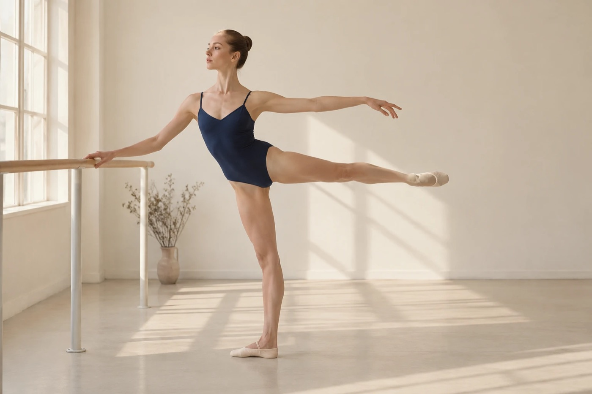
      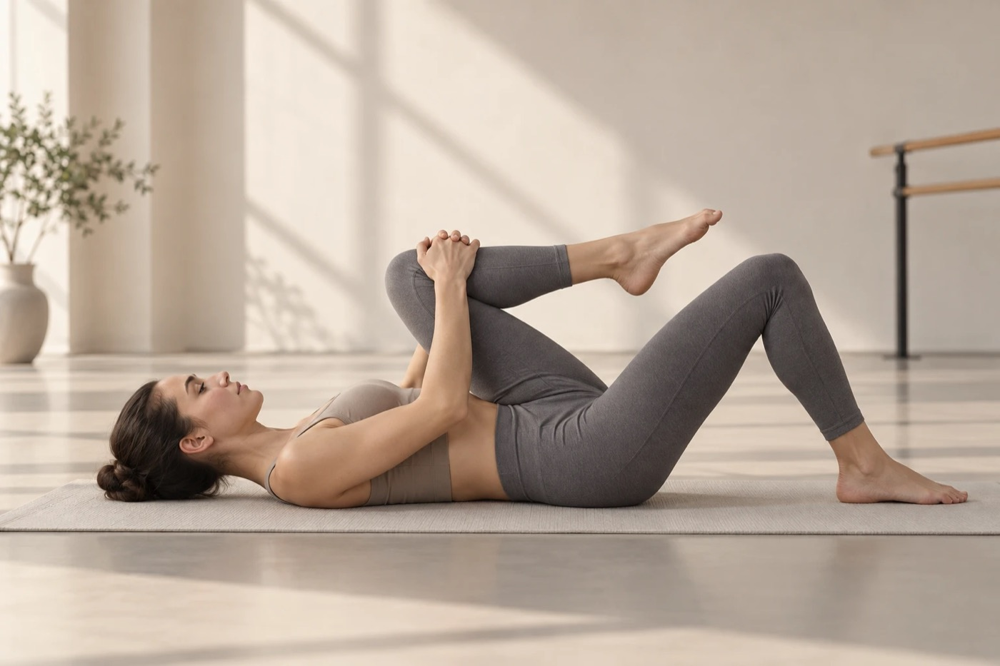
      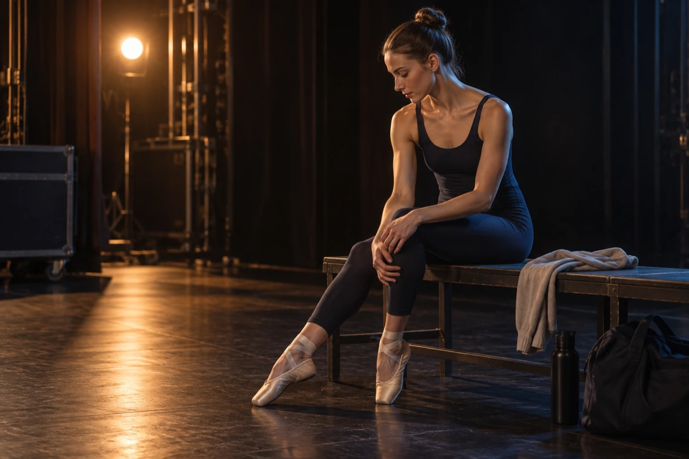
    </div>
  </section>

  <section class="block" aria-labelledby="m-title">
    <div class="wrap grid">
      <div class="rail"><div class="label" data-i18n="railBody">Beden</div></div>
      <div class="split">
        <div>
        <p class="manifesto" id="m-title" data-i18n="manifesto">Performans sanatçıları, hayatlarını bedenleriyle kazanır. Her prova, her sahne, her tekrar; o bedende <em>iz bırakır.</em></p>
        <p class="sub-manifesto" data-i18n="manifesto2">Bu yüzden beden, sadece bir araç değil, aynı zamanda bir yatırımdır. Sahne ışıkları altında beden hem yaratır hem de sınırlarını zorlar, bu yüzden özen ister.</p>
        </div>
        <figure class="photo-fig">
          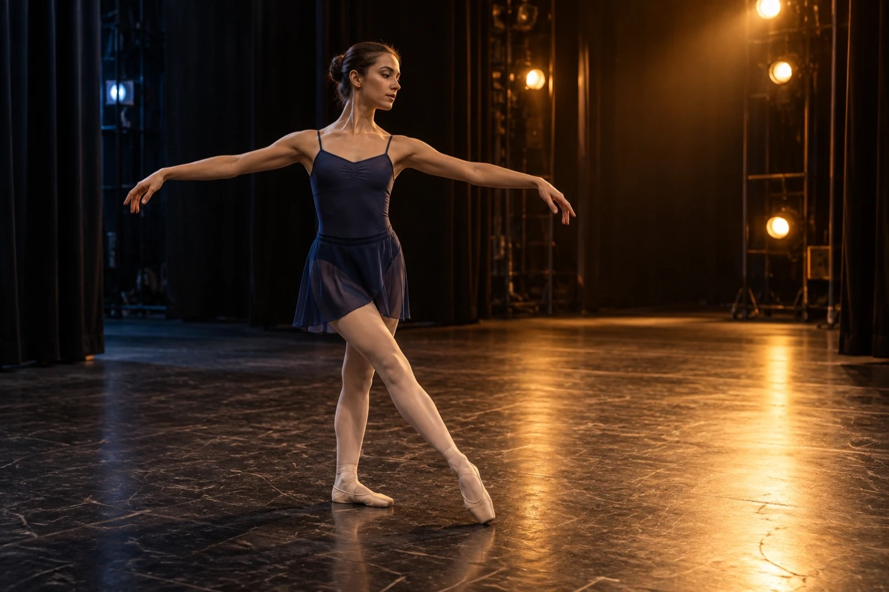
        </figure>
      </div>
    </div>
  </section>

  <section class="block" id="kimler" aria-labelledby="who-title">
    <div class="wrap grid">
      <div class="rail"><div class="label" data-i18n="railWho">Kimlerle</div></div>
      <div class="split wide">
        <div>
        <h2 id="who-title" data-i18n="whoTitle">Performans sanatları fizyoterapisti <em>kimlerle</em> çalışır?</h2>
        <p class="prose lg" style="margin-top:20px" data-i18n="whoIntro">Disiplin gözetmeksizin, hareketin olduğu her noktada performans sanatları fizyoterapisti aktif rol oynayabilir.</p>
        </div>
        <figure class="photo-fig">
          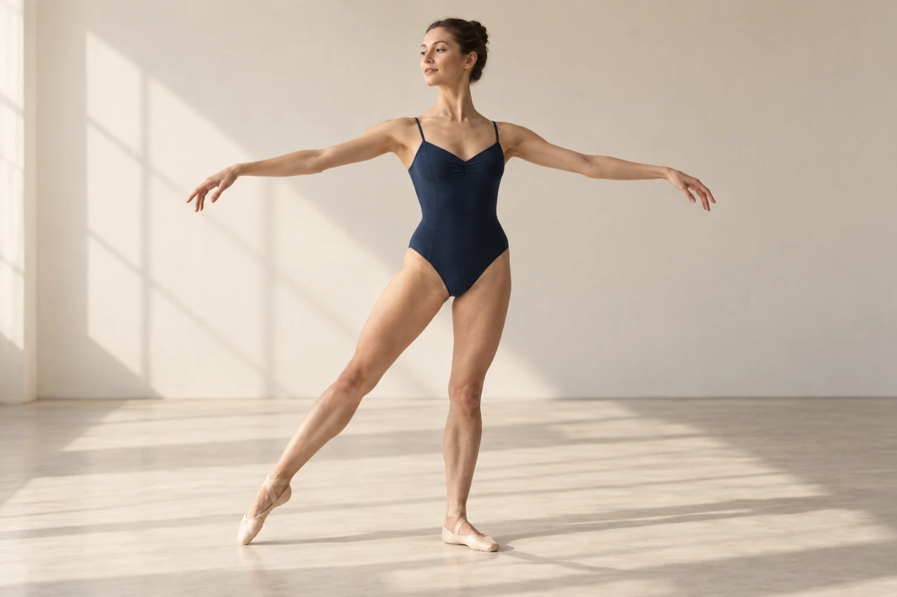
        </figure>
      </div>
    </div>
    <div class="wrap">
      <div class="who">
        <article>
          <span class="kicker" data-i18n="w1k">Hareket profesyonelleri</span>
          <h3 data-i18n="w1t">Dansçılar</h3>
          <p data-i18n="w1p">Bale sanatçılarından modern dansçılara, dans disiplinlerinden halk oyunlarına kadar her türden hareket profesyoneli ile çalışabilir.</p>
          <ul class="tags" aria-label="Dans disiplinleri">
            <li data-i18n="d1">Bale</li>
            <li data-i18n="d2">Modern dans</li>
            <li>Hip-hop</li>
            <li>Jazz</li>
            <li data-i18n="d3">Latin (Salsa, Bachata)</li>
            <li>Lindy Hop</li>
            <li>Tango</li>
            <li data-i18n="d4">Oryantal</li>
            <li data-i18n="d5">Halk oyunları</li>
          </ul>
        </article>
        <article>
          <span class="kicker" data-i18n="w2k">Enstrüman ve ses</span>
          <h3 data-i18n="w2t">Müzisyenler ve Şarkıcılar</h3>
          <p data-i18n="w2p">Enstrüman çalarken oluşan postür bozuklukları, tekrarlayıcı stres yaralanmaları ve diyafram/ses performansını destekleyici mobilite çalışmaları ile sanatçıların performans hayatlarına destek olur.</p>
        </article>
        <article>
          <span class="kicker" data-i18n="w3k">Şarkı, dans, oyunculuk</span>
          <h3 data-i18n="w3t">Müzikal Tiyatro Sanatçıları</h3>
          <p data-i18n="w3p">Aynı anda hem şarkı söyleyen, hem dans eden, hem de oyunculuk yapan sanatçıların ihtiyaç duyduğu bütüncül fiziksel kondisyonu sanatçı için kontrollü şekilde sağlar.</p>
        </article>
      </div>
    </div>
  </section>

  <section class="block" aria-labelledby="why-title">
    <div class="wrap">
      <div class="first">
        <span class="mark" aria-hidden="true" data-i18n="firstMark">İlk</span>
        <p id="why-title" data-i18n="first">Türkiye’de hem performans sanatları hem de fizyoterapi eğitimi almış ilk fizyoterapist.</p>
      </div>
      <div class="why">
        <div class="prose lg">
          <p data-i18n="why1">Dansçılar ve diğer performans sanatçıları, sporculara benzer şekilde yüksek fiziksel yüklenmelere maruz kalırlar. Uzun prova saatleri, tekrarlayan hareketler ve performans sırasında ortaya çıkan yüksek biyomekanik yüklenmeler; kas-iskelet sistemi üzerinde önemli bir stres oluşturabilir.</p>
          <p data-i18n="why2">Performans sanatlarına özel fizyoterapi yaklaşımları, sanatçının hareket repertuvarını, performans ihtiyaçlarını ve fiziksel yüklenmelerini dikkate alarak planlanır.</p>
          <figure class="photo-fig">
          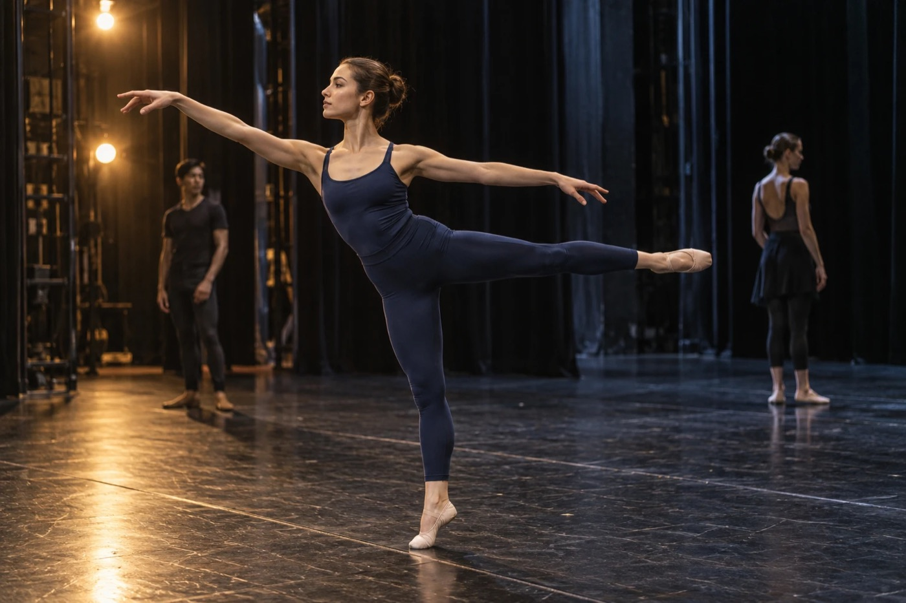
        </figure>
        </div>
        <div>
          <p class="scope-intro" data-i18n="scopeIntro">Bu nedenle performans sanatçıları için fizyoterapi yalnızca yaralanma sonrası tedavi süreciyle sınırlı değildir. Aynı zamanda:</p>
          <ul class="scope">
            <li data-i18n="s1">Yaralanmaların önlenmesi</li>
            <li data-i18n="s2">Hareket kalitesinin geliştirilmesi</li>
            <li data-i18n="s3">Performans kapasitesinin artırılması</li>
            <li data-i18n="s4">Verimli prova süresinin artırılması</li>
            <li data-i18n="s5">Sahneye güvenli dönüşün sağlanması</li>
            <li data-i18n="s6">İstenilen hareket paternlerini yapabilme becerisinin geliştirilmesi</li>
          </ul>
          <p class="scope-outro" data-i18n="scopeOutro">gibi birçok önemli süreci kapsar.</p>
        </div>
      </div>
    </div>
  </section>

  <section class="block" id="hizmetler" aria-labelledby="svc-title">
    <div class="wrap grid">
      <div class="rail"><div class="label" data-i18n="railServices">Hizmetler</div></div>
      <div>
        <h2 id="svc-title" data-i18n="svcTitle">Prova salonundan <em>sahneye</em> kadar</h2>
      </div>
    </div>
    <div class="wrap">
      <div class="services">
        <article>
          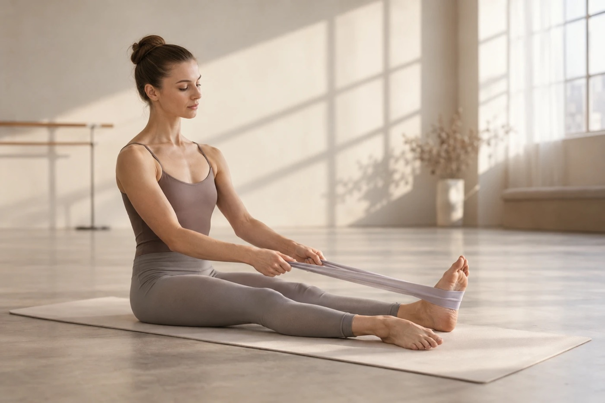
          <div class="sv-body">
          <h3 data-i18n="sv1t">Yaralanma Önleme Programları</h3>
          <p data-i18n="sv1p">Repertuvarınıza ve prova yükünüze göre planlanan, riskli bölgeleri önceden güçlendiren programlar.</p>
          </div>
        </article>
        <article>
          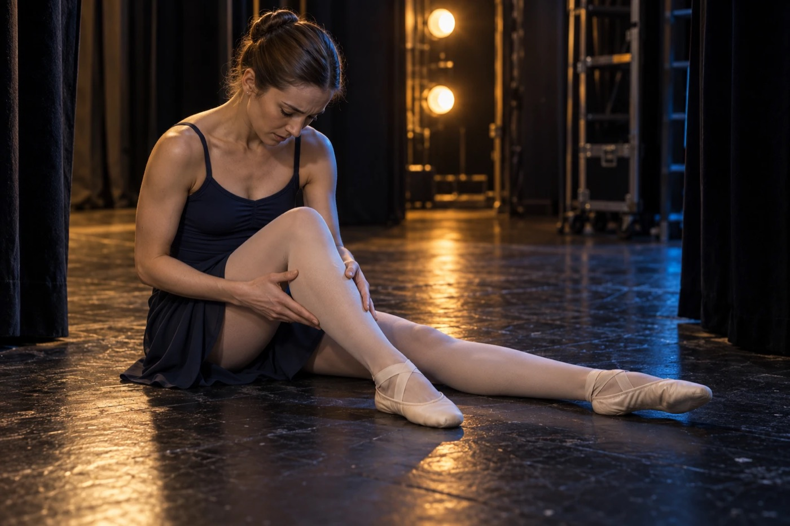
          <div class="sv-body">
          <h3 data-i18n="sv2t">Manuel Terapi</h3>
          <p data-i18n="sv2p">Kas ve eklem kısıtlılıklarına yönelik, elle uygulanan tedavi teknikleri.</p>
          </div>
        </article>
        <article>
          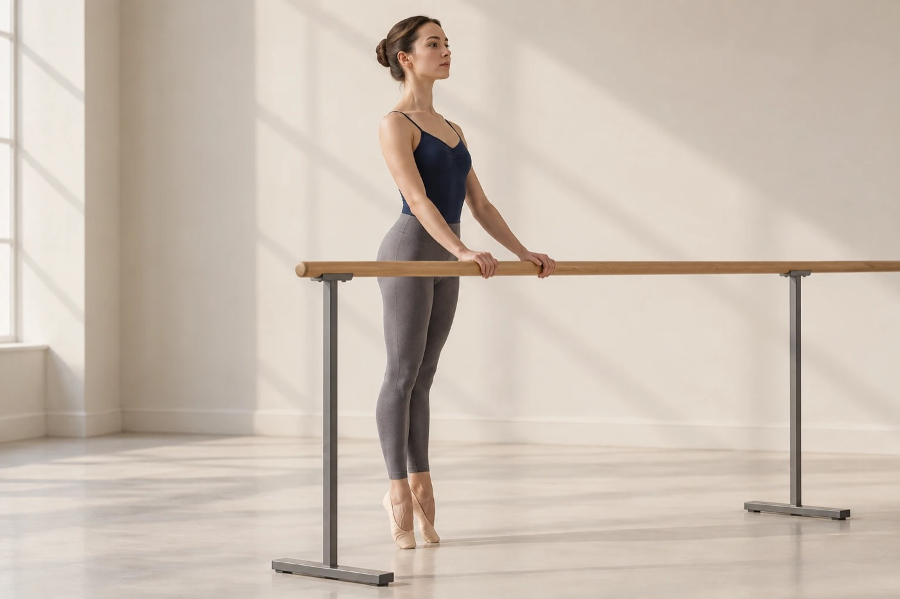
          <div class="sv-body">
          <h3 data-i18n="sv3t">Hareket Analizi ve Postür Değerlendirmesi</h3>
          <p data-i18n="sv3p">Sahnede ve enstrüman başında hareket paternlerinizin, postürünüzün ve yüklenmelerinizin değerlendirilmesi.</p>
          </div>
        </article>
        <article>
          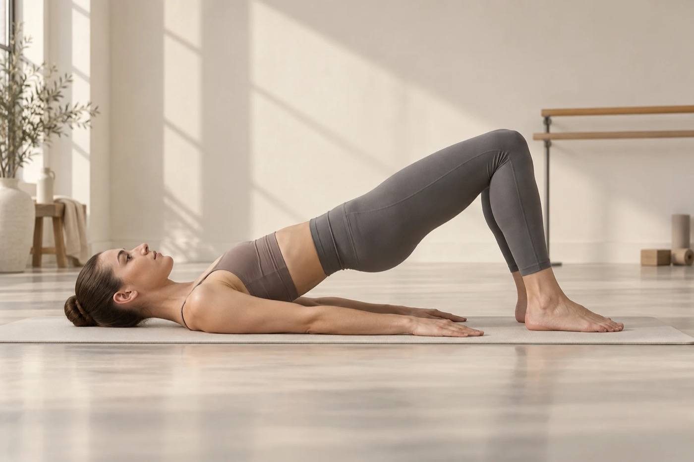
          <div class="sv-body">
          <h3 data-i18n="sv4t">Performans Geliştirme ve Kondisyon Programları</h3>
          <p data-i18n="sv4p">Kuvvet, dayanıklılık ve kondisyonu sanatınızın taleplerine göre geliştiren çalışmalar.</p>
          </div>
        </article>
        <article>
          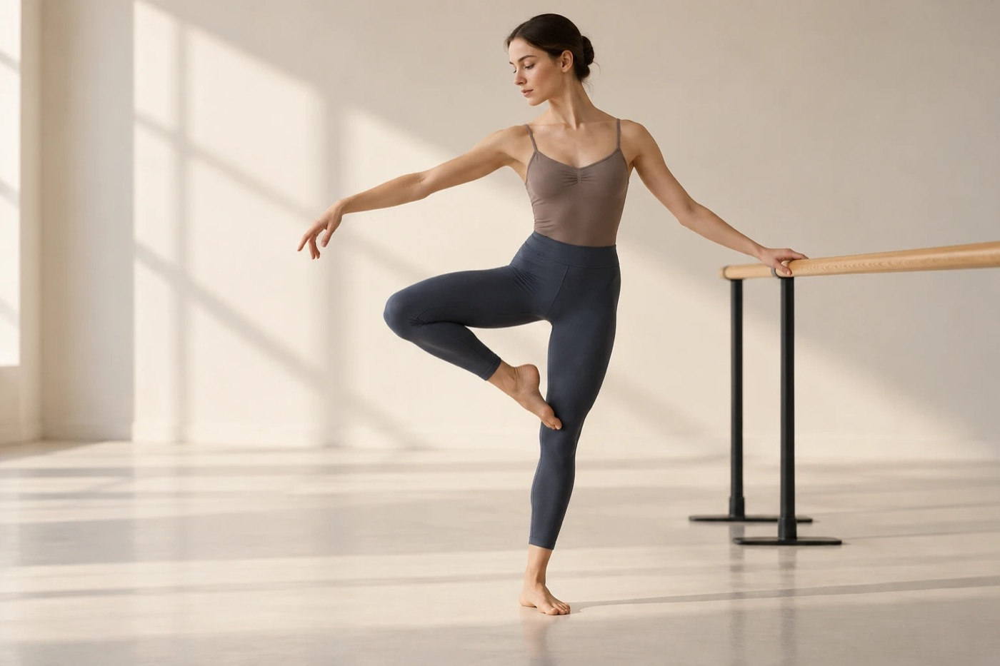
          <div class="sv-body">
          <h3 data-i18n="sv5t">Fonksiyonel Stabilite ve Mobilite Çalışmaları</h3>
          <p data-i18n="sv5p">İstenilen hareket açıklığına kontrol ve güvenle ulaşmanızı sağlayan stabilite ve mobilite egzersizleri.</p>
          </div>
        </article>
        <article>
          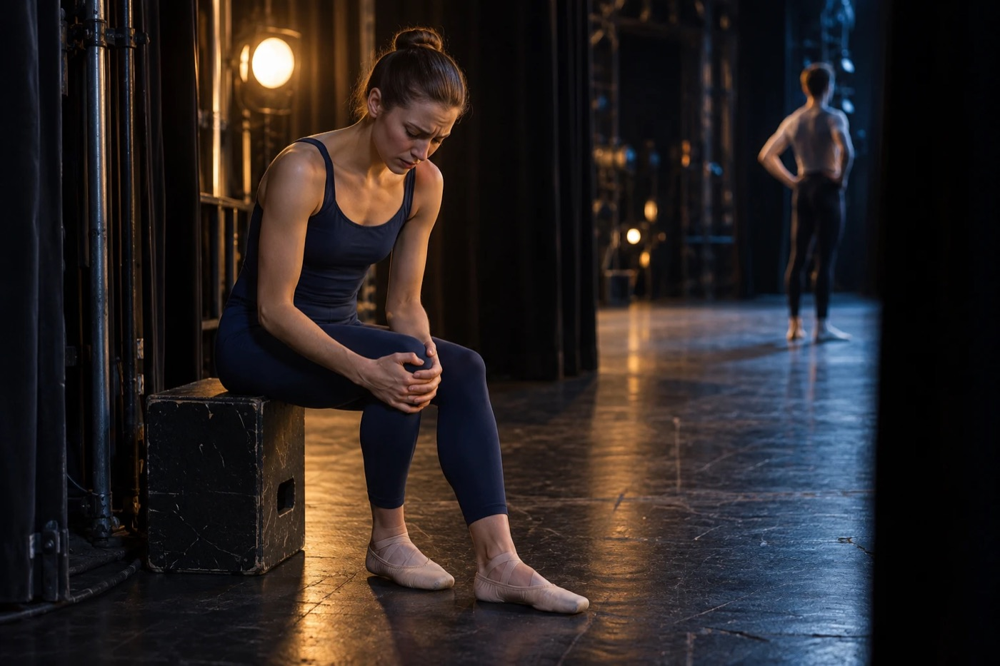
          <div class="sv-body">
          <h3 data-i18n="sv6t">Dans Yaralanmaları Rehabilitasyonu</h3>
          <p data-i18n="sv6p">Yaralanma sonrası, sahneye güvenli dönüşe kadar kademeli olarak planlanan rehabilitasyon süreci.</p>
          </div>
        </article>
      </div>
    </div>
  </section>


  <section class="block" id="lab" aria-labelledby="lab-title">
    <div class="wrap grid">
      <div class="rail"><div class="label" data-i18n="railLab">Hareket Lab</div></div>
      <div>
        <h2 id="lab-title" data-i18n="labH2">Bir hareket seçin, <em>analizini</em> izleyin</h2>
        <p class="prose lg" style="margin-top:20px" data-i18n="labIntro">Her hareket adım adım canlandırılır; diz, kalça, gövde ve ayak bileği açıları anlık olarak ölçülür. Değerler temsili bir beden modelinden hesaplanır.</p>
      </div>
    </div>
    <div class="wrap">
      <div class="studio">
        <div class="moves" id="lab-moves" role="group" aria-label="Dans hareketleri"></div>
        <figure class="lab lab-big" style="margin:0">
          <div class="lab-head">
            <span class="label rec" id="lab-rec"><i></i><span data-i18n="labTitle">Hareket analizi</span></span>
            <span style="display:flex;align-items:center;gap:12px">
              <span class="pose-name" id="lab-name">Plié</span>
              <button type="button" class="playbtn" id="lab-play" aria-pressed="true">Durdur</button>
            </span>
          </div>
          <canvas id="lab-canvas" role="img" aria-label="Seçilen dans hareketinin hareket analizi çizimi"></canvas>
          <div class="phases" id="lab-phases" aria-label="Hareket fazları"></div>
          <div class="readouts five">
            <div><span class="label" data-i18n="rKnee">Diz fleksiyonu</span><span class="v" id="lr-knee">0°</span></div>
            <div><span class="label" data-i18n="rHip">Gövde–uyluk açısı</span><span class="v" id="lr-hip">0°</span></div>
            <div><span class="label" data-i18n="rTrunk">Gövde eğimi</span><span class="v" id="lr-trunk">0°</span></div>
            <div><span class="label" data-i18n="rAnkle">Ayak bileği</span><span class="v" id="lr-ankle">0°</span></div>
            <div><span class="label" data-i18n="rHipH">Kalça yüksekliği</span><span class="v" id="lr-hiph">0 cm</span></div>
          </div>
          <div class="move-note">
            <span class="label" data-i18n="watchLabel">Fizyoterapist neye bakar?</span>
            <p id="lab-note"></p>
            <p class="legend" data-i18n="legend">Ayak bileği: + plantar fleksiyon, − dorsifleksiyon. Gövde eğimi: + öne, − geriye.</p>
          </div>
        </figure>
      </div>
    </div>
  </section>

  <section class="block" id="hakkimda" aria-labelledby="about-title">
    <div class="wrap grid">
      <div class="rail"><div class="label" data-i18n="railAbout">Hakkımda</div></div>
      <div>
        <h2 id="about-title">Fzt. Aleyna Keyif</h2>
        <div class="about">
          <div class="prose">
            <p data-i18n="a1">Aleyna Keyif, Beşiktaş Anadolu Lisesi’nde eğitim aldıktan sonra Bilgi Üniversitesi Fizyoterapi ve Rehabilitasyon Bölümü’nü ve Bilgi Üniversitesi Performans ve Gösteri Sanatları – Performans Sanatları Bölümü’nü (minör) tam burslu şekilde bitirmiştir.</p>
            <p data-i18n="a2">Bu yıllarda Bilgi Müzikal topluluğu çatısı altında yaptığı gösteriler Zorlu Performans Sanatları Sahnesi’nde sahnelenmiş; ilk performans sanatları fizyoterapistliği adımları bu zamanlarda atılmıştır.</p>
            <p data-i18n="a3">Baps Academy Pilates sertifikası bulunan Aleyna Keyif, tüm deneyimlerini performans sanatları alanında çalışmaya yoğunlaştırdığı için sahnenin getirdiği fiziksel gereksinimleri anlama ve sanatçıların güvenli bir şekilde performans yapabilmeleri konusunda uzmandır.</p>
            <div class="stage-note">
              <span class="label" data-i18n="nowLabel">Şu anda</span>
              <p data-i18n="a4">Eğitimine Almanya’da devam etmektedir. Yüz yüze seanslar kısa süreliğine durdurulmuş olup online danışmanlık seansları devam etmektedir.</p>
            </div>
          </div>
          <ul class="cv" aria-label="Eğitim ve deneyim">
            <li><span class="tag" data-i18n="cv1t">Lisans · Tam burslu</span><span class="where" data-i18n="cv1w">Bilgi Üniversitesi</span><span class="what" data-i18n="cv1d">Fizyoterapi ve Rehabilitasyon</span></li>
            <li><span class="tag" data-i18n="cv2t">Minör · Tam burslu</span><span class="where" data-i18n="cv2w">Bilgi Üniversitesi</span><span class="what" data-i18n="cv2d">Performans ve Gösteri Sanatları – Performans Sanatları</span></li>
            <li><span class="tag" data-i18n="cv3t">Sahne · 2018</span><span class="where" data-i18n="cv3w">Zorlu Performans Sanatları Merkezi, İstanbul</span><span class="what" data-i18n="cv3d">Bilgi Müzikal topluluğu gösterileri</span></li>
            <li><span class="tag" data-i18n="cv4t">Sertifika</span><span class="where">Baps Academy</span><span class="what" data-i18n="cv4d">Pilates</span></li>
            <li><span class="tag" data-i18n="cv5t">Lise</span><span class="where" data-i18n="cv5w">Beşiktaş Anadolu Lisesi</span></li>
            <li><span class="tag" data-i18n="cv6t">Devam ediyor</span><span class="where" data-i18n="cv6w">Almanya</span><span class="what" data-i18n="cv6d">Eğitimine devam ediyor</span></li>
          </ul>
        </div>
      </div>
    </div>
  </section>

  <section class="block" id="egitim" aria-labelledby="edu-title">
    <div class="wrap grid">
      <div class="rail"><div class="label" data-i18n="railEdu">Eğitim</div></div>
      <div>
        <h2 id="edu-title" data-i18n="eduTitle">Eğitim &amp; Workshoplar</h2>
        <div class="soon">
          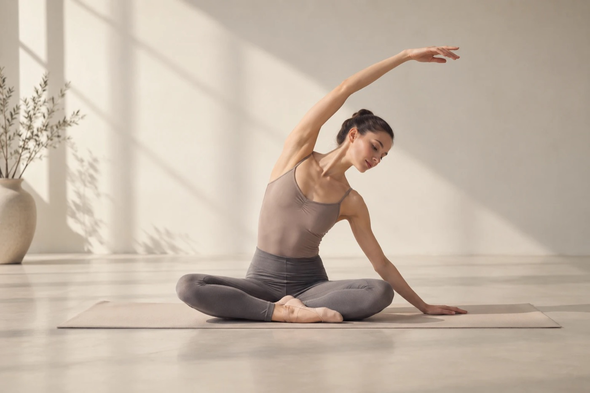
          <div class="soon-text">
            <p data-i18n="eduText">Sizin için çalışmalarımız devam etmektedir.</p>
            <span class="pill"><span class="dot warn"></span><span data-i18n="eduPill">Hazırlanıyor</span></span>
          </div>
        </div>
      </div>
    </div>
  </section>

  <section class="block" id="iletisim" aria-labelledby="contact-title">
    <div class="wrap grid">
      <div class="rail"><div class="label" data-i18n="railContact">İletişim</div></div>
      <div>
        <h2 id="contact-title" data-i18n="contactTitle">Online danışmanlık için <em>yazın</em></h2>
        <div class="contact">
          <div>
            <p class="prose lg" data-i18n="contactText">Kısa bir süreliğine yüz yüze seanslarımız durdurulmuştur. Online danışmanlık için e-posta üzerinden iletişime geçebilirsiniz.</p>
            <div class="notice" style="margin-top:24px">
              <div class="row"><span><span class="dot ok"></span><span data-i18n="nOnline">Online danışmanlık</span></span><span class="state ok" data-i18n="nOnlineS">Devam ediyor</span></div>
              <div class="row"><span><span class="dot warn"></span><span data-i18n="nF2F">Yüz yüze seanslar</span></span><span class="state warn" data-i18n="nF2FS">Kısa süreliğine durduruldu</span></div>
            </div>
          </div>
          <div>
            <span class="label" data-i18n="emailLabel">E-posta</span>
            <p class="mail" id="mail">keyifaleyna@gmail.com</p>
            <div class="cta-row" style="margin-top:0">
              <button type="button" class="btn" id="copy" data-i18n="copy">Adresi kopyala</button>
              <a class="btn ghost" href="mailto:keyifaleyna@gmail.com?subject=Online%20dan%C4%B1%C5%9Fmanl%C4%B1k" data-i18n="mailto">E-posta uygulamasında aç</a>
            </div>
            <div class="copy-state" id="copy-state" aria-live="polite"></div>
            <div class="social">
              <a href="https://www.instagram.com/aleynakucukkeyif/" target="_blank" rel="noopener">
                <svg viewBox="0 0 24 24" fill="none" stroke="currentColor" stroke-width="1.7" aria-hidden="true"><rect x="3" y="3" width="18" height="18" rx="5"/><circle cx="12" cy="12" r="4"/><circle cx="17.5" cy="6.5" r="1" fill="currentColor" stroke="none"/></svg>
                Instagram
              </a>
              <a href="https://youtube.com/@aleynakeyif" target="_blank" rel="noopener">
                <svg viewBox="0 0 24 24" fill="none" stroke="currentColor" stroke-width="1.7" aria-hidden="true"><rect x="2.5" y="5" width="19" height="14" rx="4"/><path d="M10 9.2v5.6l4.8-2.8z" fill="currentColor" stroke="none"/></svg>
                YouTube
              </a>
              <a href="https://www.linkedin.com/in/aleyna-keyif-62993b1b4/" target="_blank" rel="noopener">
                <svg viewBox="0 0 24 24" fill="none" stroke="currentColor" stroke-width="1.7" aria-hidden="true"><rect x="3" y="3" width="18" height="18" rx="3"/><path d="M8 10.5V17M8 7.2v.1M12 17v-6.5M12 13.5c0-2 1.3-3 2.7-3S17 11.5 17 13.5V17"/></svg>
                LinkedIn
              </a>
            </div>
          </div>
        </div>
      </div>
    </div>
  </section>
</main>

<footer>
  <div class="wrap">
    <span class="label">© Aleyna Keyif · performingartsphysiotherapy.com</span>
    <span class="label" data-i18n="footer">Performans Sanatları Fizyoterapisi</span>
  </div>
</footer>

<script>
(function(){
  /* ---------- i18n ---------- */
  const EN = {
    brandSub:"Physiotherapist",
    navLab:"Movement Lab",
    navWho:"Who it’s for", navServices:"Services", navAbout:"About", navEdu:"Education &amp; Workshops", navContact:"Contact",
    heroEyebrow:"Pt. Aleyna Keyif · For dancers, musicians and stage performers",
    heroTitle:"Performing <em>Arts</em> Physiotherapy",
    heroLead:"Get free of the pain that holds your performance back, and focus on your art.",
    pillOnline:"Online consultations continue", pillF2F:"In-person sessions briefly paused",
    ctaBook:"Book an online consultation", ctaServices:"See services",
    labTitle:"Movement analysis", pause:"Pause", play:"Play",
    rKnee:"Knee flexion", rHip:"Trunk–thigh angle", rTrunk:"Trunk lean",
    labCaption:"Knee, hip and trunk angles through preparation, lunge, arabesque and relevé.",
    railBody:"The body",
    manifesto:"Performing artists earn their living with their bodies. Every rehearsal, every show, every repetition <em>leaves a mark.</em>",
    manifesto2:"That is why the body is more than a tool. It is an investment. Under the stage lights the body creates and pushes its limits at the same time, so it deserves care.",
    railWho:"Who it’s for",
    whoTitle:"Who does a performing arts physiotherapist <em>work with?</em>",
    whoIntro:"Whatever the discipline, wherever there is movement, a performing arts physiotherapist can play an active role.",
    w1k:"Movement professionals", w1t:"Dancers",
    w1p:"From ballet artists to contemporary dancers, from social dance styles to folk dance: every kind of movement professional.",
    d1:"Ballet", d2:"Contemporary", d3:"Latin (Salsa, Bachata)", d4:"Belly dance", d5:"Folk dance",
    w2k:"Instrument and voice", w2t:"Musicians and Singers",
    w2p:"Support for postural problems that develop while playing, repetitive strain injuries, and mobility work that supports the diaphragm and vocal performance.",
    w3k:"Singing, dancing, acting", w3t:"Musical Theatre Performers",
    w3p:"A controlled path to the all-round physical conditioning needed by artists who sing, dance and act at the same time.",
    firstMark:"1st",
    first:"The first physiotherapist in Turkey trained in both the performing arts and physiotherapy.",
    why1:"Dancers and other performing artists face physical loads similar to athletes. Long rehearsal hours, repetitive movement and the high biomechanical loads of performance can put significant stress on the musculoskeletal system.",
    why2:"Physiotherapy designed for the performing arts is planned around the artist’s movement repertoire, performance needs and physical load.",
    scopeIntro:"So for performing artists, physiotherapy is not limited to treatment after an injury. It also covers:",
    s1:"Injury prevention", s2:"Better movement quality", s3:"Greater performance capacity",
    s4:"More productive rehearsal time", s5:"A safe return to the stage", s6:"The ability to perform the movement patterns you want",
    scopeOutro:"and many other important processes.",
    railServices:"Services",
    svcTitle:"From the rehearsal room <em>to the stage</em>",
    sv1t:"Injury Prevention Programmes", sv1p:"Programmes built around your repertoire and rehearsal load that strengthen vulnerable areas before problems start.",
    sv2t:"Manual Therapy", sv2p:"Hands-on treatment techniques for muscle and joint restrictions.",
    sv3t:"Movement Analysis and Posture Assessment", sv3p:"An assessment of your movement patterns, posture and loading, on stage and at your instrument.",
    sv4t:"Performance and Conditioning Programmes", sv4p:"Strength, endurance and conditioning work shaped by the demands of your art.",
    sv5t:"Functional Stability and Mobility", sv5p:"Stability and mobility exercises that help you reach the range you want with control and confidence.",
    sv6t:"Dance Injury Rehabilitation", sv6p:"A step-by-step rehabilitation plan from injury to a safe return to the stage.",
    railLab:"Movement Lab",
    labH2:"Pick a move and watch its <em>analysis</em>",
    labIntro:"Each move is animated step by step while the knee, hip, trunk and ankle angles are measured live. Values come from a representative body model.",
    rAnkle:"Ankle", rHipH:"Hip height", watchLabel:"What the physio watches",
    legend:"Ankle: + plantarflexion, − dorsiflexion. Trunk lean: + forward, − back.",
    railAbout:"About",
    a1:"After Beşiktaş Anatolian High School, Aleyna Keyif graduated with a full scholarship from Bilgi University’s Physiotherapy and Rehabilitation department, with a minor in Performing and Visual Arts – Performing Arts, also at Bilgi University.",
    a2:"During those years her productions with the Bilgi Musical society were staged at Zorlu Performing Arts Center, and her first steps as a performing arts physiotherapist were taken then.",
    a3:"Holding a Baps Academy Pilates certificate and having focused all of her experience on the performing arts, she specialises in the physical demands of the stage and in helping artists perform safely.",
    nowLabel:"Now",
    a4:"She is currently continuing her studies in Germany. In-person sessions are briefly paused; online consultations continue.",
    cv1t:"BSc · Full scholarship", cv1w:"Bilgi University", cv1d:"Physiotherapy and Rehabilitation",
    cv2t:"Minor · Full scholarship", cv2w:"Bilgi University", cv2d:"Performing and Visual Arts – Performing Arts",
    cv3t:"Stage · 2018", cv3w:"Zorlu Performing Arts Center, Istanbul", cv3d:"Bilgi Musical society productions",
    cv4t:"Certificate", cv4d:"Pilates",
    cv5t:"High school", cv5w:"Beşiktaş Anatolian High School",
    cv6t:"Ongoing", cv6w:"Germany", cv6d:"Continuing her studies",
    railEdu:"Education", eduTitle:"Education &amp; Workshops",
    eduText:"We are working on this for you.", eduPill:"In preparation",
    railContact:"Contact",
    contactTitle:"<em>Write</em> for an online consultation",
    contactText:"In-person sessions are paused for a short while. For an online consultation, get in touch by email.",
    nOnline:"Online consultation", nOnlineS:"Available", nF2F:"In-person sessions", nF2FS:"Briefly paused",
    emailLabel:"Email", copy:"Copy address", mailto:"Open in mail app",
    copied:"Copied to clipboard", copyFail:"Address selected. Press Ctrl/⌘ + C to copy.",
    footer:"Performing Arts Physiotherapy",
    poses:["Preparation","Lunge","Arabesque","Relevé"],
    canvasLabel:"Movement analysis drawing showing a dancer’s joint angles through a sequence of positions"
  };
  const TRX = {
    play:"Oynat", pause:"Durdur",
    copied:"Panoya kopyalandı", copyFail:"Adres seçildi. Kopyalamak için Ctrl/⌘ + C.",
    poses:["Hazırlık","Hamle","Arabesk","Relevé"],
    canvasLabel:"Bir dansçının hareket sırasında eklem açılarını gösteren hareket analizi çizimi"
  };
  const nodes = [...document.querySelectorAll("[data-i18n]")];
  const TR = {};
  nodes.forEach(n => { TR[n.dataset.i18n] = n.innerHTML; });
  Object.assign(TR, TRX);
  const altNodes = [...document.querySelectorAll("img[data-alt-en]")];
  altNodes.forEach(img => { img.dataset.altTr = img.alt; });
  let lang = "tr";
  const t = k => (lang === "en" ? EN : TR)[k];

  function setLang(l){
    lang = l;
    document.documentElement.lang = l;
    nodes.forEach(n => { const v = t(n.dataset.i18n); if (v != null) n.innerHTML = v; });
    altNodes.forEach(img => { img.alt = l === "en" ? img.dataset.altEn : img.dataset.altTr; });
    document.querySelectorAll(".lang button").forEach(b => b.setAttribute("aria-pressed", String(b.dataset.lang === l)));
    document.getElementById("mocap").setAttribute("aria-label", t("canvasLabel"));
    updatePlayLabel();
    labUI();
    document.title = l === "en" ? "Performing Arts Physiotherapy" : "Performans Sanatları Fizyoterapisi";
    try { localStorage.setItem("pap-lang", l); } catch(e){}
  }
  document.querySelectorAll(".lang button").forEach(b => b.addEventListener("click", () => setLang(b.dataset.lang)));

  /* ---------- copy email ---------- */
  const copyBtn = document.getElementById("copy"), copyState = document.getElementById("copy-state"), mail = document.getElementById("mail");
  copyBtn.addEventListener("click", () => {
    const done = () => { copyState.textContent = t("copied"); };
    const fail = () => {
      const r = document.createRange(); r.selectNodeContents(mail);
      const s = getSelection(); s.removeAllRanges(); s.addRange(r);
      copyState.textContent = t("copyFail");
    };
    try { navigator.clipboard.writeText(mail.textContent.trim()).then(done, fail); } catch(e){ fail(); }
  });

  /* ---------- keep photo subjects centred in their crops ---------- */
  const focusImgs = [...document.querySelectorAll("img[data-cx]")];
  function focusImg(img){
    const r = img.getBoundingClientRect(); if (!r.width || !r.height) return;
    const ia = (img.naturalWidth || 1400) / (img.naturalHeight || 933), ca = r.width / r.height;
    const cx = +img.dataset.cx, cy = +img.dataset.cy;
    let px = 50, py = 50;
    if (ca < ia){ const v = ca / ia; if (v < 1){ const left = Math.min(Math.max(cx - v / 2, 0), 1 - v); px = left / (1 - v) * 100; } }
    else { const v = ia / ca; if (v < 1){ const top = Math.min(Math.max(cy - v / 2, 0), 1 - v); py = top / (1 - v) * 100; } }
    img.style.objectPosition = px.toFixed(1) + "% " + py.toFixed(1) + "%";
  }
  const focusRO = new ResizeObserver(es => es.forEach(e => focusImg(e.target)));
  focusImgs.forEach(img => { focusRO.observe(img); img.addEventListener("load", () => focusImg(img)); });

  /* ---------- motion engine (shared by hero and movement lab) ---------- */
  const L = { torso:.52, neck:.2, head:.095, ua:.29, fa:.27, th:.44, sh:.43, ft:.15 };
  // Angles in degrees. Limbs: 0 = pointing down, +90 = forward. Torso/head: 0 = up, + = forward lean. lift = metres off the floor.
  const pose = p => Object.assign({ t:0, hd:0, hx:0, lift:0 }, p);
  const rad = d => d * Math.PI / 180;
  const down = (a, len) => [Math.sin(rad(a)) * len, -Math.cos(rad(a)) * len];
  const up = (a, len) => [Math.sin(rad(a)) * len, Math.cos(rad(a)) * len];
  const add = (p, v) => [p[0] + v[0], p[1] + v[1]];
  const lerp = (a, b, k) => a + (b - a) * k;
  const ease = k => k < .5 ? 4*k*k*k : 1 - Math.pow(-2*k + 2, 3) / 2;

  function mix(A, B, k){
    const o = {};
    for (const key in A){
      if (typeof A[key] === "number") o[key] = lerp(A[key], B[key], k);
      else { o[key] = {}; for (const s in A[key]) o[key][s] = lerp(A[key][s], B[key][s], k); }
    }
    return o;
  }
  function solve(P){
    const hip = [0, 0];
    const neck = add(hip, up(P.t, L.torso));
    const head = add(neck, up(P.t + P.hd, L.neck));
    const sh = add(neck, up(P.t, -.035));
    const leg = g => { const k = add(hip, down(g.th, L.th)); const a = add(k, down(g.sh, L.sh)); return { k, a, toe: add(a, down(g.ft, L.ft)) }; };
    const arm = g => { const e = add(sh, down(g.u, L.ua)); return { e, w: add(e, down(g.f, L.fa)) }; };
    const n = leg(P.n), f = leg(P.f), na = arm(P.na), fa = arm(P.fa);
    const minY = Math.min(n.toe[1], f.toe[1], n.a[1] - .05, f.a[1] - .05, n.k[1] - .05, f.k[1] - .05);
    const shift = p => [p[0] + P.hx, p[1] - minY + P.lift];
    const S = { hip, neck, head, sh, n, f, na, fa };
    const out = {};
    for (const key in S){
      const v = S[key];
      if (Array.isArray(v)) out[key] = shift(v);
      else { out[key] = {}; for (const s in v) out[key][s] = shift(v[s]); }
    }
    out.P = P;
    return out;
  }
  function angle(a, b, c){ // interior angle at b
    const v1 = [a[0]-b[0], a[1]-b[1]], v2 = [c[0]-b[0], c[1]-b[1]];
    const d = (v1[0]*v2[0] + v1[1]*v2[1]) / (Math.hypot(...v1) * Math.hypot(...v2));
    return Math.acos(Math.max(-1, Math.min(1, d))) * 180 / Math.PI;
  }
  function metrics(S){
    return {
      knee: 180 - angle(S.hip, S.n.k, S.n.a),
      hip: angle(S.neck, S.hip, S.n.k),
      trunk: S.P.t,
      ankle: angle(S.n.k, S.n.a, S.n.toe) - 90,
      hipH: S.hip[1] * 100
    };
  }
  const deg = v => (Math.round(v) < 0 ? "−" : "") + Math.abs(Math.round(v)) + "°";

  function timeline(frames){
    const total = frames.reduce((s, f) => s + f.hold + f.move, 0);
    const offset = i => frames.slice(0, i).reduce((s, f) => s + f.hold + f.move, 0);
    return {
      total, offset,
      at(ms){
        let m = ((ms % total) + total) % total;
        for (let i = 0; i < frames.length; i++){
          const f = frames[i];
          if (m < f.hold) return { S: solve(f.p), idx: i };
          m -= f.hold;
          if (m < f.move){ const k = ease(m / f.move), j = (i + 1) % frames.length; return { S: solve(mix(f.p, frames[j].p, k)), idx: k > .5 ? j : i }; }
          m -= f.move;
        }
        return { S: solve(frames[0].p), idx: 0 };
      }
    };
  }

  let colors = {};
  const rigs = [];
  function readColors(){
    const cs = getComputedStyle(document.documentElement);
    ["--figure","--figure-far","--accent","--muted","--line","--ink","--surface"].forEach(k => colors[k] = cs.getPropertyValue(k).trim());
    rigs.forEach(r => r.draw(r.last));
  }
  readColors();
  matchMedia("(prefers-color-scheme: dark)").addEventListener("change", readColors);
  new MutationObserver(readColors).observe(document.documentElement, { attributes:true, attributeFilter:["data-theme"] });

  function createRig(cv, opts = {}){
    const ctx = cv.getContext("2d");
    const rig = { last: null, visible: true, trailN: [], trailW: [] };
    let W = 0, H = 0, dpr = 1;
    rig.resize = () => {
      dpr = Math.min(window.devicePixelRatio || 1, 2);
      const r = cv.getBoundingClientRect();
      W = r.width; H = r.height;
      cv.width = Math.round(W * dpr); cv.height = Math.round(H * dpr);
      ctx.setTransform(dpr, 0, 0, dpr, 0, 0);
    };
    rig.clear = () => { rig.trailN.length = 0; rig.trailW.length = 0; };
    rig.push = S => {
      rig.trailN.push(S.n.toe); rig.trailW.push(S.na.w);
      if (rig.trailN.length > 46) rig.trailN.shift();
      if (rig.trailW.length > 46) rig.trailW.shift();
    };
    rig.draw = S => {
      if (!S || !W) return;
      rig.last = S;
      ctx.clearRect(0, 0, W, H);
      const scale = Math.min(H / (opts.room || 2.28), W / 2.1);
      const gx = W * .52, gy = H * .88;
      const X = p => gx + p[0] * scale, Y = p => gy - p[1] * scale;
      const pt = p => [X(p), Y(p)];

      // floor with 10 cm ticks
      ctx.strokeStyle = colors["--line"]; ctx.lineWidth = 1;
      ctx.beginPath(); ctx.moveTo(16, gy + .5); ctx.lineTo(W - 16, gy + .5); ctx.stroke();
      ctx.fillStyle = colors["--muted"];
      ctx.font = "10.5px 'DM Mono', ui-monospace, monospace";
      const step = .1 * scale;
      let i = 0;
      for (let x = gx; x < W - 16; x += step, i++) {
        const h = i % 10 === 0 ? 8 : (i % 5 === 0 ? 5 : 3);
        ctx.fillRect(Math.round(x), gy, 1, h);
        if (i) ctx.fillRect(Math.round(gx - (x - gx)), gy, 1, h);
      }
      // 1 m scale bar
      const by = gy + 22, bx = 20;
      ctx.fillRect(bx, by, scale, 1); ctx.fillRect(bx, by - 3, 1, 7); ctx.fillRect(bx + scale, by - 3, 1, 7);
      ctx.textBaseline = "top"; ctx.fillText("1 m", bx + scale + 8, by - 5);

      // floor shadow (shrinks when airborne)
      const air = Math.max(0, 1 - S.P.lift * 2.2);
      const sg = ctx.createRadialGradient(gx, gy, 0, gx, gy, scale * .8);
      sg.addColorStop(0, colors["--line"]); sg.addColorStop(1, "transparent");
      ctx.save(); ctx.globalAlpha = .6; ctx.fillStyle = sg;
      ctx.beginPath(); ctx.ellipse(gx + S.P.hx * scale, gy, scale * .7 * (.55 + .45 * air), scale * .06, 0, 0, Math.PI * 2); ctx.fill(); ctx.restore();

      // hip height marker
      if (opts.hipMarker){
        const hy = Y(S.hip), hx = X(S.hip);
        ctx.save(); ctx.setLineDash([2, 4]); ctx.strokeStyle = colors["--muted"]; ctx.globalAlpha = .55; ctx.lineWidth = 1;
        ctx.beginPath(); ctx.moveTo(24, hy); ctx.lineTo(hx - 10, hy); ctx.moveTo(30, hy); ctx.lineTo(30, gy); ctx.stroke(); ctx.restore();
        ctx.fillStyle = colors["--muted"]; ctx.textBaseline = "bottom"; ctx.fillText(Math.round(S.hip[1] * 100) + " cm", 36, hy - 4);
      }

      // trails
      const trail = (arr, col) => {
        for (let j = 1; j < arr.length; j++){
          ctx.strokeStyle = col; ctx.globalAlpha = (j / arr.length) * .55; ctx.lineWidth = 1.5;
          ctx.beginPath(); ctx.moveTo(X(arr[j-1]), Y(arr[j-1])); ctx.lineTo(X(arr[j]), Y(arr[j])); ctx.stroke();
        }
        ctx.globalAlpha = 1;
      };
      trail(rig.trailN, colors["--accent"]);
      trail(rig.trailW, colors["--accent"]);

      const bone = (a, b, col, w) => { ctx.strokeStyle = col; ctx.lineWidth = w; ctx.lineCap = "round"; ctx.beginPath(); ctx.moveTo(X(a), Y(a)); ctx.lineTo(X(b), Y(b)); ctx.stroke(); };
      const joint = (p, col, r) => { ctx.fillStyle = col; ctx.beginPath(); ctx.arc(X(p), Y(p), r, 0, Math.PI*2); ctx.fill(); };
      const ring = (p, col, r) => { ctx.strokeStyle = col; ctx.lineWidth = 1.4; ctx.beginPath(); ctx.arc(X(p), Y(p), r, 0, Math.PI*2); ctx.stroke(); };

      const far = colors["--figure-far"], fig = colors["--figure"];
      bone(S.hip, S.f.k, far, 2.2); bone(S.f.k, S.f.a, far, 2.2); bone(S.f.a, S.f.toe, far, 2.2);
      bone(S.sh, S.fa.e, far, 2); bone(S.fa.e, S.fa.w, far, 2);
      [S.f.k, S.f.a, S.fa.e, S.fa.w].forEach(p => joint(p, far, 3));
      bone(S.hip, S.neck, fig, 2.4);
      const hn = [S.head[0] - (S.head[0]-S.neck[0]) * (L.head / L.neck), S.head[1] - (S.head[1]-S.neck[1]) * (L.head / L.neck)];
      bone(S.neck, hn, fig, 2.4);
      ring(S.head, fig, L.head * scale);
      bone(S.hip, S.n.k, fig, 2.4); bone(S.n.k, S.n.a, fig, 2.4); bone(S.n.a, S.n.toe, fig, 2.4);
      bone(S.sh, S.na.e, fig, 2.2); bone(S.na.e, S.na.w, fig, 2.2);
      [S.hip, S.neck, S.n.k, S.n.a, S.n.toe, S.na.e, S.na.w].forEach(p => joint(p, fig, 3.6));
      [S.n.k, S.hip].forEach(p => ring(p, colors["--accent"], 7.5));

      const arc = (c, a, b, r) => {
        const [cx, cy] = pt(c), [ax, ay] = pt(a), [bx2, by2] = pt(b);
        let a1 = Math.atan2(ay - cy, ax - cx), a2 = Math.atan2(by2 - cy, bx2 - cx);
        let d = a2 - a1; while (d > Math.PI) d -= 2*Math.PI; while (d < -Math.PI) d += 2*Math.PI;
        ctx.strokeStyle = colors["--accent"]; ctx.lineWidth = 1.4;
        ctx.beginPath(); ctx.arc(cx, cy, r, a1, a1 + d, d < 0); ctx.stroke();
      };
      const M = metrics(S);
      if (M.knee > 8) arc(S.n.k, S.hip, S.n.a, 22);
      arc(S.hip, S.neck, S.n.k, 30);

      ctx.save(); ctx.setLineDash([3, 4]); ctx.strokeStyle = colors["--muted"]; ctx.globalAlpha = .5; ctx.lineWidth = 1;
      ctx.beginPath(); ctx.moveTo(X(S.hip), Y(S.hip)); ctx.lineTo(X(S.hip), Y([0, S.hip[1] + L.torso + .05])); ctx.stroke(); ctx.restore();

      ctx.fillStyle = colors["--ink"]; ctx.font = "500 11.5px 'DM Mono', ui-monospace, monospace"; ctx.textBaseline = "middle";
      ctx.fillText(Math.round(M.knee) + "°", X(S.n.k) + 14, Y(S.n.k) - 14);
      ctx.fillText(Math.round(M.hip) + "°", X(S.hip) + 16, Y(S.hip) + 14);
      return M;
    };
    new ResizeObserver(() => { rig.resize(); rig.draw(rig.last); }).observe(cv);
    new IntersectionObserver(es => es.forEach(e => { rig.visible = e.isIntersecting; })).observe(cv);
    rig.resize();
    rigs.push(rig);
    return rig;
  }

  const reduce = matchMedia("(prefers-reduced-motion: reduce)").matches;

  /* ---------- hero: looping sequence ---------- */
  const HERO_POSES = [
    pose({ t:0,  hd:0,  n:{th:0,  sh:0,   ft:90},  f:{th:-2,  sh:-2,  ft:88},  na:{u:12, f:34},  fa:{u:8,  f:28} }),
    pose({ t:6,  hd:4,  n:{th:82, sh:-4,  ft:90},  f:{th:-40, sh:-66, ft:-78}, na:{u:168,f:178}, fa:{u:162,f:174}, hx:.05 }),
    pose({ t:24, hd:-8, n:{th:-96,sh:-97, ft:-102},f:{th:0,   sh:0,   ft:90},  na:{u:96, f:92},  fa:{u:56, f:62},  hx:.12 }),
    pose({ t:0,  hd:-4, n:{th:0,  sh:0,   ft:14},  f:{th:-1,  sh:-1,  ft:12},  na:{u:166,f:206}, fa:{u:160,f:200} })
  ];
  const heroTL = timeline(HERO_POSES.map(p => ({ p, hold:1300, move:1500 })));
  const heroRig = createRig(document.getElementById("mocap"));
  let playing = !reduce;
  let clock = heroTL.offset(2); // start on arabesque, fully visible at rest
  let lastPoseIdx = -1;
  const elKnee = document.getElementById("r-knee"), elHip = document.getElementById("r-hip"), elTrunk = document.getElementById("r-trunk"), elPose = document.getElementById("pose-name");
  const playBtn = document.getElementById("play"), rec = document.getElementById("rec");
  function updatePlayLabel(){
    playBtn.textContent = playing ? t("pause") : t("play");
    playBtn.setAttribute("aria-pressed", String(playing));
    rec.classList.toggle("paused", !playing);
    lastPoseIdx = -1;
  }
  playBtn.addEventListener("click", () => { playing = !playing; updatePlayLabel(); });

  /* ---------- movement lab: pick a move ---------- */
  const STAND = { t:0, hd:0, n:{th:0,sh:0,ft:90}, f:{th:-2,sh:-2,ft:88} };
  const ARMS = {
    low:   { na:{u:12, f:34},  fa:{u:8,  f:28} },
    first: { na:{u:62, f:94},  fa:{u:56, f:88} },
    second:{ na:{u:88, f:92},  fa:{u:70, f:78} },
    fifth: { na:{u:166,f:206}, fa:{u:160,f:200} }
  };
  const P = (legs, arms, extra) => pose(Object.assign({}, STAND, legs, ARMS[arms], extra || {}));
  const F = (p, tr, en, hold, move) => ({ p, name:{ tr, en }, hold, move });
  const DEMI = { n:{th:38,sh:-38,ft:90}, f:{th:36,sh:-38,ft:88} };
  const TENDU_D = { n:{th:22,sh:22,ft:45} };
  const TENDU_B = { n:{th:-22,sh:-22,ft:-45}, t:4 };
  const MOVES = [
    { id:"plie", name:{tr:"Plié", en:"Plié"}, tag:{tr:"Dizleri bükme", en:"Bending the knees"}, key:2,
      note:{tr:"Dizlerin ayak parmaklarıyla aynı hizada ilerlemesi, demi-plié’de topukların yerde kalması.", en:"Knees tracking over the toes, and heels staying down in demi-plié."},
      frames:[ F(P({}, "low"), "1. pozisyon", "1st position", 600, 1100),
               F(P(DEMI, "first"), "Demi-plié", "Demi-plié", 400, 1000),
               F(P({ n:{th:78,sh:-62,ft:62}, f:{th:76,sh:-62,ft:60}, t:4 }, "low"), "Grand plié", "Grand plié", 600, 1200),
               F(P(DEMI, "second"), "Demi-plié", "Demi-plié", 300, 1000) ] },
    { id:"releve", name:{tr:"Relevé", en:"Relevé"}, tag:{tr:"Parmak ucuna yükselme", en:"Rising onto the toes"}, key:2,
      note:{tr:"Ayak bileğinin içe ya da dışa kaçmadan (sickling) dik yükselmesi ve kontrollü iniş.", en:"The ankle rising straight without rolling in or out (sickling), then a controlled lowering."},
      frames:[ F(P({}, "low"), "1. pozisyon", "1st position", 600, 700),
               F(P({ n:{th:30,sh:-30,ft:90}, f:{th:28,sh:-30,ft:88} }, "first"), "Demi-plié", "Demi-plié", 250, 700),
               F(P({ n:{th:0,sh:0,ft:18}, f:{th:-1,sh:-1,ft:16} }, "fifth"), "Relevé", "Relevé", 1300, 1000) ] },
    { id:"tendu", name:{tr:"Tendu", en:"Tendu"}, tag:{tr:"Ayağı yerde uzatma", en:"Stretching the foot along the floor"}, key:1,
      note:{tr:"Pelvisin sabit kalması ve çalışan ayağın parmak ucuna kadar tam uzanması.", en:"A still pelvis while the working foot stretches to a full point."},
      frames:[ F(P({}, "second"), "5. pozisyon", "5th position", 500, 800),
               F(P(TENDU_D, "second"), "Tendu devant", "Tendu devant", 900, 800),
               F(P({}, "second"), "5. pozisyon", "5th position", 400, 800),
               F(P(TENDU_B, "second"), "Tendu derrière", "Tendu derrière", 900, 800) ] },
    { id:"passe", name:{tr:"Passé", en:"Passé"}, tag:{tr:"Ayağı dize çekme", en:"Drawing the foot to the knee"}, key:1,
      note:{tr:"Destek bacağın kalçasının yükselmeden sabit kalması ve dengenin korunması.", en:"The standing hip staying level and the balance holding."},
      frames:[ F(P({}, "low"), "5. pozisyon", "5th position", 500, 900),
               F(P({ n:{th:85,sh:-62,ft:-25} }, "first"), "Passé", "Passé", 900, 800),
               F(P({ n:{th:85,sh:-62,ft:-25}, f:{th:0,sh:0,ft:18} }, "fifth"), "Relevé passé", "Relevé passé", 1100, 1000) ] },
    { id:"arabesque", name:{tr:"Arabesk", en:"Arabesque"}, tag:{tr:"Bacağı arkaya uzatma", en:"Extending the leg behind"}, key:2,
      note:{tr:"Yükün kalça ekstansiyonu ile bel omurgası arasında dengeli paylaşılması.", en:"Load shared between hip extension and the lower back instead of hinging at the spine."},
      frames:[ F(P({}, "low"), "5. pozisyon", "5th position", 500, 900),
               F(P(TENDU_B, "first"), "Tendu derrière", "Tendu derrière", 300, 900),
               F(pose({ t:24, hd:-8, n:{th:-96,sh:-97,ft:-102}, f:{th:0,sh:0,ft:90}, na:{u:96,f:92}, fa:{u:56,f:62}, hx:.12 }), "Arabesk", "Arabesque", 1500, 1100) ] },
    { id:"battement", name:{tr:"Grand battement", en:"Grand battement"}, tag:{tr:"Büyük bacak atışı", en:"A big, fast leg throw"}, key:1,
      note:{tr:"Tepe noktasında hamstring esnekliği, inişte bacağın kontrollü şekilde yere dönmesi.", en:"Hamstring length at the top and a controlled return to the floor."},
      frames:[ F(P({}, "second"), "5. pozisyon", "5th position", 600, 380),
               F(P({ n:{th:106,sh:106,ft:116} }, "second"), "Battement", "Battement", 220, 850),
               F(P(TENDU_D, "second"), "Tendu devant", "Tendu devant", 250, 550) ] },
    { id:"lunge", name:{tr:"Hamle", en:"Lunge"}, tag:{tr:"Öne adım ve çökme", en:"Stepping and sinking forward"}, key:1,
      note:{tr:"Ön dizin ayak bileği hizasında kalması ve arka kalçanın öne açılması.", en:"The front knee staying over the ankle while the back hip opens."},
      frames:[ F(P({}, "low"), "Hazırlık", "Preparation", 600, 1200),
               F(pose({ t:6, hd:4, n:{th:82,sh:-4,ft:90}, f:{th:-40,sh:-66,ft:-78}, na:{u:168,f:178}, fa:{u:162,f:174}, hx:.05 }), "Hamle", "Lunge", 1500, 1200) ] },
    { id:"saute", name:{tr:"Sauté", en:"Sauté"}, tag:{tr:"Plié’den sıçrama", en:"Jumping from plié"}, key:2,
      note:{tr:"İnişin plié ile yumuşatılması ve dizlerin içe kaçmaması.", en:"Absorbing the landing through plié with the knees not collapsing inward."},
      frames:[ F(P({}, "low"), "1. pozisyon", "1st position", 500, 550),
               F(P({ n:{th:42,sh:-42,ft:90}, f:{th:40,sh:-42,ft:88} }, "low"), "Demi-plié", "Demi-plié", 160, 260),
               F(P({ n:{th:2,sh:2,ft:12}, f:{th:-2,sh:-2,ft:10} }, "low", { lift:.26 }), "Havada", "In the air", 110, 280),
               F(P({ n:{th:42,sh:-42,ft:90}, f:{th:40,sh:-42,ft:88} }, "low"), "İniş", "Landing", 350, 700) ] },
    { id:"cambre", name:{tr:"Cambré", en:"Cambré"}, tag:{tr:"Gövdeyi geriye ve öne eğme", en:"Bending the trunk back and forward"}, key:1,
      note:{tr:"Eğilmenin tüm omurgaya yayılması; boyun ya da belde tek noktadan kırılmaması.", en:"The bend spreading through the whole spine, not hinging at the neck or lower back."},
      frames:[ F(P({}, "fifth"), "5. pozisyon kollar", "Arms in 5th", 500, 1300),
               F(P({ t:-26, hd:-18, na:{u:196,f:222}, fa:{u:190,f:216} }, "fifth"), "Geriye cambré", "Cambré back", 1100, 1500),
               F(P({ t:72, hd:16, na:{u:6,f:4}, fa:{u:2,f:0} }, "fifth"), "Öne cambré", "Cambré forward", 1000, 1400) ] }
  ];
  MOVES.forEach(m => { m.tl = timeline(m.frames); });

  const labRig = createRig(document.getElementById("lab-canvas"), { hipMarker:true });
  const labMoves = document.getElementById("lab-moves"), labPhases = document.getElementById("lab-phases");
  const labName = document.getElementById("lab-name"), labNote = document.getElementById("lab-note");
  const labPlay = document.getElementById("lab-play"), labRec = document.getElementById("lab-rec");
  const LR = { knee:"lr-knee", hip:"lr-hip", trunk:"lr-trunk", ankle:"lr-ankle", hipH:"lr-hiph" };
  Object.keys(LR).forEach(k => LR[k] = document.getElementById(LR[k]));
  let move = MOVES[0], labPlaying = !reduce, labClock = reduce ? move.tl.offset(move.key) : 0, lastPhase = -1;

  MOVES.forEach(m => {
    const b = document.createElement("button");
    b.type = "button"; b.className = "move"; b.id = "move-" + m.id; b.dataset.move = m.id;
    b.innerHTML = "<b></b><span></span>";
    b.addEventListener("click", () => selectMove(m));
    labMoves.appendChild(b);
  });
  function selectMove(m){
    move = m;
    labClock = reduce && !labPlaying ? m.tl.offset(m.key) : 0;
    labRig.clear(); lastPhase = -1;
    labUI();
  }
  function labUI(){
    labMoves.querySelectorAll(".move").forEach(b => {
      const m = MOVES.find(x => x.id === b.dataset.move);
      b.querySelector("b").textContent = m.name[lang];
      b.querySelector("span").textContent = m.tag[lang];
      b.setAttribute("aria-pressed", String(m === move));
    });
    labName.textContent = move.name[lang];
    labNote.textContent = move.note[lang];
    labPhases.innerHTML = "";
    move.frames.forEach(f => { const s = document.createElement("span"); s.textContent = f.name[lang]; labPhases.appendChild(s); });
    labPlay.textContent = labPlaying ? t("pause") : t("play");
    labPlay.setAttribute("aria-pressed", String(labPlaying));
    labRec.classList.toggle("paused", !labPlaying);
    lastPhase = -1;
  }
  labPlay.addEventListener("click", () => { labPlaying = !labPlaying; labUI(); });

  let prev = performance.now();
  function frame(now){
    const dt = Math.min(now - prev, 64); prev = now;
    if (playing) clock += dt;
    if (labPlaying) labClock += dt;
    if (heroRig.visible || !heroRig.last){
      const { S, idx } = heroTL.at(clock);
      if (playing) heroRig.push(S);
      if (idx !== lastPoseIdx){ elPose.textContent = t("poses")[idx]; lastPoseIdx = idx; }
      const M = heroRig.draw(S);
      if (M){ elKnee.textContent = Math.round(M.knee) + "°"; elHip.textContent = Math.round(M.hip) + "°"; elTrunk.textContent = Math.round(M.trunk) + "°"; }
    }
    if (labRig.visible || !labRig.last){
      const { S, idx } = move.tl.at(labClock);
      if (labPlaying) labRig.push(S);
      if (idx !== lastPhase){ [...labPhases.children].forEach((s, i) => s.classList.toggle("on", i === idx)); lastPhase = idx; }
      const M = labRig.draw(S);
      if (M){
        LR.knee.textContent = deg(M.knee); LR.hip.textContent = deg(M.hip); LR.trunk.textContent = deg(M.trunk);
        LR.ankle.textContent = deg(M.ankle); LR.hipH.textContent = Math.round(M.hipH) + " cm";
      }
    }
    requestAnimationFrame(frame);
  }

  let saved = null;
  try { saved = localStorage.getItem("pap-lang"); } catch(e){}
  setLang(saved === "en" ? "en" : "tr");
  updatePlayLabel();
  requestAnimationFrame(frame);
  if (document.fonts && document.fonts.ready) document.fonts.ready.then(() => rigs.forEach(r => r.draw(r.last)));
})();
</script>
